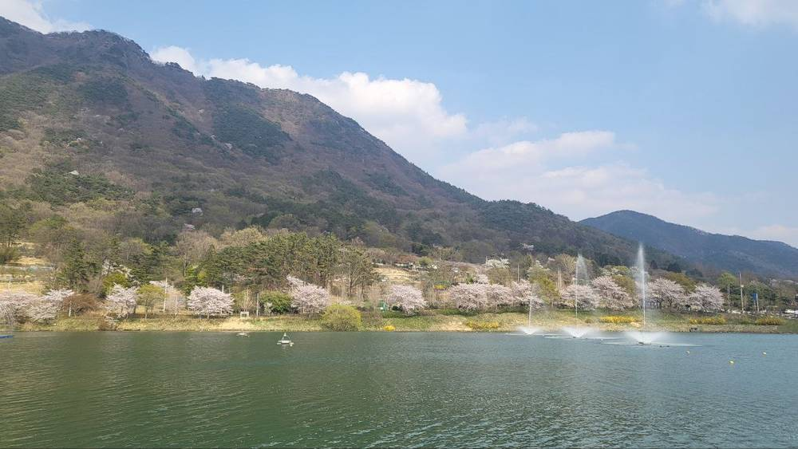

반도체 산단 물길·전깃길 아래 주민들 "먹고살 대책부터"…화순 수몰 예정지엔 연금 대신 태양광 소득 검토

동복댐 새 댐에 280여 가구 잠길 듯…고창 변전소는 '자발 유치' 내세웠지만 주민지원 협약은 아직
호남 반도체 산업단지에 물과 전기를 대기 위한 댐·변전소 건설 예정지 주민들이 생계 대책을 요구하고 있지만, 정부는 연금식 직접 보상 대신 태양광 수익을 통한 간접 지원을 검토하고 있다. 정부는 산단 용수를 위해 2030년까지 동복댐 하류에 새 댐을 지을 계획이며, 전남 화순군 백아면·이서면과 담양군 가사문학면의 280여 가구가 물에 잠길 것으로 추정된다.
이곳은 1971년 동복댐 완공 뒤 1985년까지 이어진 확장으로 15개 마을 796세대, 6,000여 명이 이미 고향을 떠난 곳이다. 주민 대표들은 농사를 잃으면 공익직불금 등도 끊긴다며 다달이 생활비가 나오는 '생계형 연금'을 요구했다. 김성환 기후에너지환경부 장관은 11일 간담회에서 연금 형식의 직접 지원은 어렵다는 취지로 말하고, 댐 주변 정비사업비로 태양광을 설치해 소득을 나누는 방안을 내놨다.
전북 고창군 성송면은 345kV 신고창변전소 부지로 확정되면서 한국전력이 34개 마을 만장일치, 실거주 주민 95% 이상 동의를 내세운 '성공 모델'이 됐다. 그러나 주민 지원 협약은 아직 체결되지 않았고, 설명회 과정에서 문서 근거 없는 보상금 이야기가 먼저 돌았다는 지적도 나온다. 기후부는 9월 송전선로 지원금의 최대 3분의 2를 주변 마을에 나누고 '계통햇빛소득마을' 선도사업을 발굴하겠다고 밝혔다.
시민에너지 관점
덴마크는 풍력단지 지분 일부를 주변 주민에게 먼저 팔도록 해 반대를 공동 소유로 바꿨다. 수몰과 송전탑을 떠안는 주민에게 일회성 보상금만 쥐여 주면 돈은 흩어지고 갈등은 다음 마을로 옮겨 갈 뿐이다. 태양광 소득이 대안이 되려면 주민이 발전소의 지분과 운영권을 갖고, 고령 주민도 매달 받을 수 있는 배당 구조가 문서로 약속돼야 한다. 정부는 댐·송전망 지원 사업을 주민 소유 햇빛발전소와 처음부터 묶어 설계하고, 그 조건을 협약에 분명히 적어야 한다.
출처: 경향신문 2026-11-13 송윤경·손우성 원문 보기
半導体団地の水路・送電路の下の住民「まず生活の保障を」…和順の水没予定地には年金の代わりに太陽光収入を検討
同福ダムの新ダムで約280世帯が水没へ…高敞変電所は「自発的誘致」を掲げるも住民支援協約は未締結
湖南半導体産業団地に水と電力を供給するためのダム・変電所の建設予定地で、住民が生活保障を求めているが、政府は年金型の直接補償ではなく太陽光収益による間接支援を検討している。政府は団地用水のため2030年までに同福（トンボク）ダム下流に新しいダムを建設する計画で、全羅南道和順郡の白鴉面・二西面と潭陽郡歌辞文学面の約280世帯が水没すると推定される。
この地域では1971年の同福ダム完成後、1985年まで続いた拡張で15の村の796世帯、6,000人余りがすでに故郷を離れた。住民代表は、農地を失えば公益直払金なども途絶えるとして、毎月生活費が出る「生計型年金」を求めた。金星煥（キム・ソンファン）気候エネルギー環境部長官は11日の懇談会で、年金形式の直接支援は難しいとの趣旨を述べ、ダム周辺整備事業費で太陽光を設置し収入を分ける案を示した。
全羅北道高敞郡星松面は345kVの新高敞変電所の用地に決まり、韓国電力は34の村の満場一致、実際に住む住民の95％以上の同意を掲げる「成功モデル」とした。しかし住民支援協約はまだ結ばれておらず、説明会の過程で文書の裏付けのない補償金の話が先に広がったとの指摘もある。気候部は9月、送電線支援金の最大3分の2を周辺の村に配分し、「系統太陽光所得村」の先導事業を発掘すると発表した。
市民エネルギーの視点
デンマークは風力発電所の持分の一部を周辺住民に優先して販売させ、反対を共同所有に変えた。水没や送電塔を引き受ける住民に一時的な補償金だけを渡せば、お金は散り、対立は次の村へ移るだけだ。太陽光収入が代案となるには、住民が発電所の持分と運営権を持ち、高齢の住民も毎月受け取れる配当の仕組みが文書で約束されなければならない。政府はダム・送電網の支援事業を住民所有の太陽光発電所と最初から一体で設計し、その条件を協約に明記すべきだ。
出典: 경향신문 2026-11-13 송윤경·손우성 原文を読む
半导体园区水路电路下的居民：“先给生计保障”…和顺淹没预定区拟以太阳能收入代替年金
同福水坝新坝预计淹没约280户…高敞变电站标榜“自愿引进”，居民支援协议仍未签订
为湖南半导体产业园区供水供电而建设的水坝、变电站预定地居民正在要求生计保障，但政府考虑以太阳能收益间接支援，而非年金式直接补偿。政府计划在2030年前于同福水坝下游新建水坝以保障园区用水，预计全罗南道和顺郡白鸦面、二西面及潭阳郡歌辞文学面约280户将被淹没。
1971年同福水坝建成后至1985年的扩建中，已有15个村庄796户、6,000余人离开故乡。居民代表表示，失去农田后公益直补等收入也会中断，要求每月发放生活费的“生计型年金”。气候能源环境部长官金星焕11日在座谈会上表示年金形式的直接支援有困难，并提出用水坝周边整治事业费安装太阳能、分享收入的方案。
全罗北道高敞郡星松面被确定为345kV新高敞变电站选址，韩国电力以34个村庄一致同意、实际居住居民95%以上赞成为由，将其称为“成功模式”。但居民支援协议尚未签订，也有人指出说明会过程中先流传了没有书面依据的补偿金说法。气候部9月宣布，将把输电线路支援金最多三分之二分配给周边村庄，并发掘“电网阳光收入村”示范项目。
市民能源视角
丹麦要求风电场优先向周边居民出售部分股份，把反对变成了共同所有。如果只给承担淹没和输电塔的居民一次性补偿，钱会散掉，矛盾只会转移到下一个村庄。太阳能收入要成为替代方案，居民必须拥有电站股份和运营权，并以书面形式承诺连高龄居民也能每月领取的分红结构。政府应从一开始就把水坝、电网支援项目与居民所有的太阳能电站捆绑设计，并在协议中写明这些条件。
来源: 경향신문 2026-11-13 송윤경·손우성 查看原文
Residents under the water and power lines for Korea's chip cluster ask for a livelihood first — solar income, not pensions, offered in Hwasun
About 280 households face flooding by a new dam; Gochang substation hailed as a 'voluntary' siting, but no resident support agreement yet
Residents in areas slated for a dam and substations to supply water and power to the Honam semiconductor cluster are demanding livelihood guarantees, but the government is considering indirect support through solar income rather than pension-style compensation. The government plans to build a new dam below the Dongbok Dam by 2030 to secure water for the cluster, and about 280 households in Hwasun and Damyang counties, South Jeolla, are expected to be flooded.
The area already lost 796 households and more than 6,000 people from 15 villages when the Dongbok Dam was completed in 1971 and expanded through 1985. Resident representatives say losing farmland will also cut off farm subsidies, and they have asked for a 'livelihood pension' paid monthly. Climate, Energy and Environment Minister Kim Sung-hwan said at a meeting with residents on Nov. 11 that direct pension-type support would be difficult, and instead proposed installing solar power with dam-area improvement funds and sharing the income.
In Seongsong-myeon, Gochang County, North Jeolla, chosen as the site of the 345kV Singochang substation, KEPCO has promoted a 'success model' backed by all 34 villages and more than 95% of residents who live there. Yet no resident support agreement has been signed, and some residents say talk of cash compensation with no written basis spread during briefings. In September the ministry said it would give up to two-thirds of transmission-line support funds to nearby villages and launch pilot 'grid solar income villages'.
Citizen Energy View
Denmark turned opposition into co-ownership by requiring wind farms to offer part of their shares to nearby residents first. Handing one-off payments to people who must live with flooding and pylons only scatters the money and moves the conflict to the next village. For solar income to be a real alternative, residents must hold equity and operating rights in the plants, with written promises of monthly dividends that elderly residents can count on. The government should design dam and grid support schemes together with resident-owned solar plants from the start and write those terms into the agreements.
Source: 경향신문 2026-11-13 송윤경·손우성 Read the original